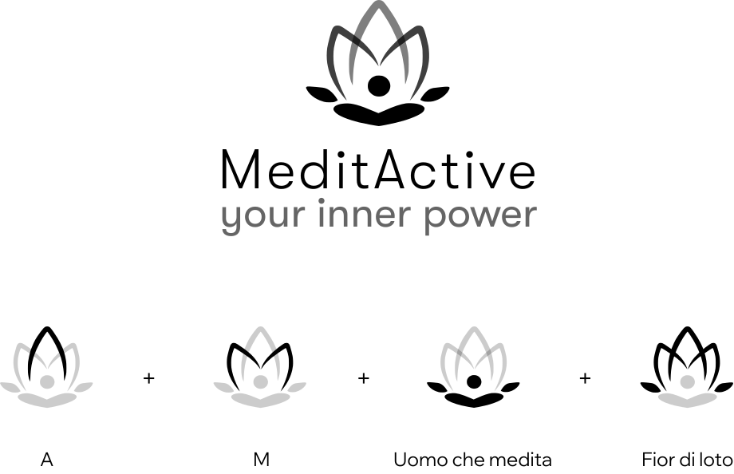

Brand identity / UI design
MeditActive
Identità visiva per un’app di meditazione attiva. Il progetto include logo, palette, tipografia, icon set, UI e materiali social.

Un sistema visivo morbido, riconoscibile e coerente.
MeditActive nasce come app per introdurre pratiche di meditazione e crescita personale nella quotidianità. La direzione visiva doveva comunicare calma, introspezione e accessibilità.
Ho lavorato su un’identità applicabile: logo, colori ispirati al loto, tipografie, icone e contenuti social pensati come parti dello stesso sistema.

01 · Logo
Un segno tra loto e meditazione.
Il logo combina fiore di loto e figura in meditazione. Le forme richiamano spiritualità, equilibrio e le iniziali del brand, mantenendo linee semplici e morbide.

02 · UI
Portare l’identità nell’interfaccia.
La UI riprende palette, tipografia e ritmo visivo del brand per costruire schermate coerenti, calme e facilmente leggibili.

03 · Sistema social
Far vivere il brand su più touchpoint.
I materiali social mostrano come la stessa identità può adattarsi a Youtube, Facebook e Instagram mantenendo riconoscibilità.

04 · Applicazioni
Nuova interfaccia UI.
Ho voluto proporre una versione più fresca dell'interfaccia app, mantenendo una coerenza in termini UI, ma rendendola più in linea con i trend del momento.
Risultato.
MeditActive valorizza la mia parte più visuale: composizione, identità, coerenza e capacità di declinare un linguaggio su formati diversi.